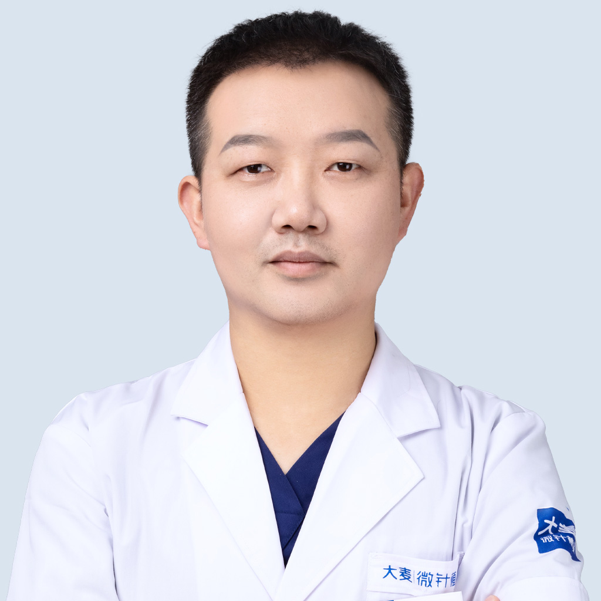
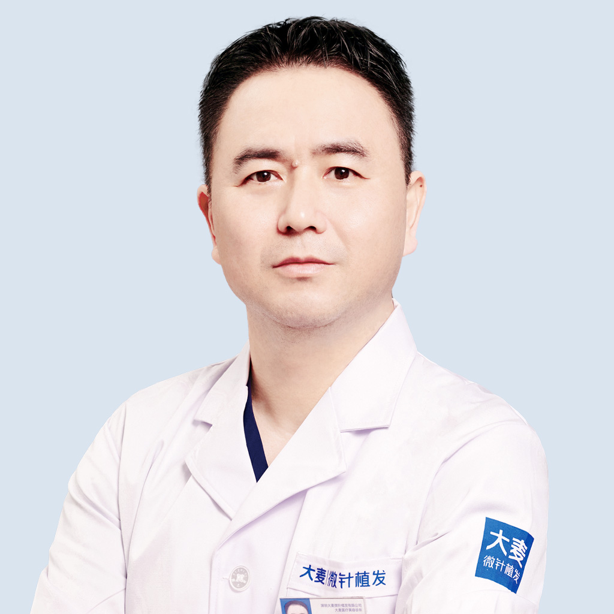

Over 100 experienced doctors dedicated to providing high-quality hair restoration results.
Medical Directors
Medical Director, Associate Chief Physician
Medical Director of Shanghai Barley Hair Transplant Hospital, Associate Chief Physician, Chief Plastic Surgeon. Published multiple academic papers in the field of hair transplantation.

Medical Director
Bachelor of Clinical Medicine from Henan University of Science and Technology. 18 years of surgical clinical experience with advanced training at multiple hospitals. Medical Director with comprehensive expertise in hair restoration.
Hair Transplant Physician
Graduated from Tongji Medical College, Huazhong University of Science and Technology. Over 20 years of surgical clinical experience, obtained attending physician qualification in 2005. Specializes in precision microneedle hair transplantation.
Hair Transplant Physician
Graduated from Wuhan University of Science and Technology Medical School. Completed 1-year advanced training at Wugang General Hospital and 1-year advanced training at Union Hospital, Tongji Medical College. Currently practicing at Shenzhen Barley Microneedle Hair Transplant Hospital.
Hair Transplant Physician
Over 30 years of surgical experience. Currently practicing at Shenyang Barley Hair Transplant Hospital. Specializes in surgical diagnosis and treatment, autologous hair transplantation with skilled technical proficiency.
Hair Transplant Physician
Graduated in 2006 from North China Coal Medical College with a degree in Clinical Medicine. 11 years of surgical experience. Currently practicing at Shenyang Barley Microneedle Hair Transplant Hospital with expertise in advanced transplantation techniques.
Hair Transplant Physician
Nearly 20 years of clinical practice experience. Deeply engaged in hair transplantation research, proficient in all types of hair transplant surgeries. Specializes in creating natural, dense results that mimic original hair growth patterns.

Hair Transplant Physician
Bachelor of Clinical Medicine from Yichun University in 2002. Over 18 years of clinical experience. Currently practicing at Shenzhen Barley Microneedle Hair Transplant Hospital with comprehensive surgical expertise.
Hair Transplant Physician
Over 30 years of professional experience with a background in military hospitals. Deeply engaged in hair loss diagnosis and treatment, hair transplantation surgery, and cutting-edge academic research. Known for responsible diagnostic approach and positive patient testimonials.
Hair Transplant Physician
Lead surgeon at Shanghai Barley Microneedle Hair Transplant. Qualified as a lead surgeon in 2003. Published 2 professional papers in medical journals. Extensive experience in complex hair restoration procedures.
Hair Transplant Physician
Previously practiced at the Plastic Surgery Department of Hunan Provincial Academy of Traditional Chinese Medicine Affiliated Hospital. Specializes in hair transplantation surgery with solid surgical foundation and rigorous operational standards.
Hair Transplant Physician
Licensed surgeon and CPC member. 9 years of surgical experience. Currently practicing at Shanghai Barley Microneedle Hair Transplant. Specializes in hairline restoration, microneedle density enhancement, and other advanced hair transplantation procedures.
Advanced microneedle technology for precision hair restoration with natural results.
Using your own hair follicles for completely natural-looking restoration.
Personalized hairline design for natural results that match your facial features.
Increasing hair density while maintaining natural growth direction.
Real stories from real patients
Schedule a free consultation with one of our expert doctors to discuss your hair restoration options
Everyone's hair loss journey and solution are unique due to a variety of factors. Our hair restoration experts will assist you in determining the root cause and a suitable solution for your hair restoration plan. If you have any questions, please ask; we are happy to assist.
15810155700
+86 13730143529
hairtransplant@qq.com